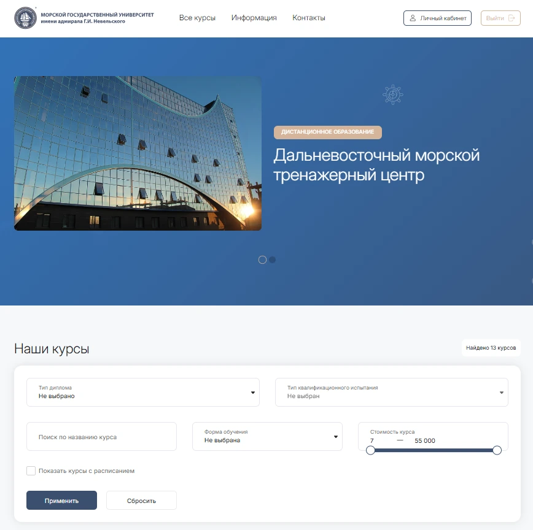
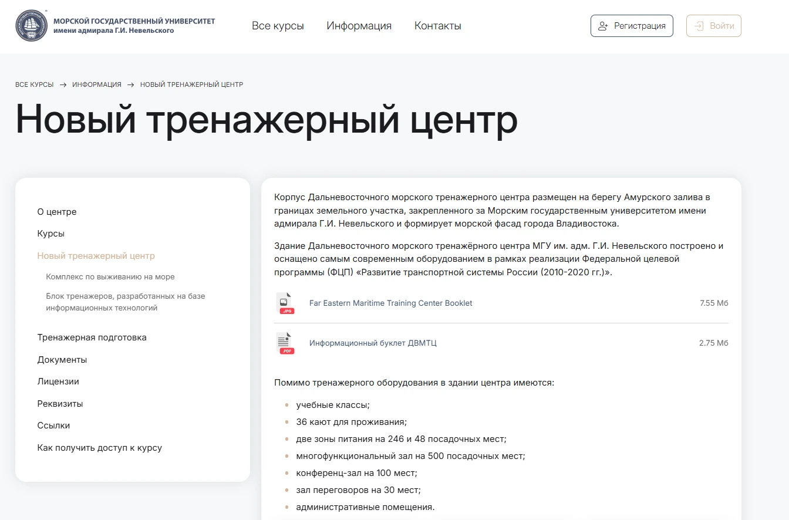
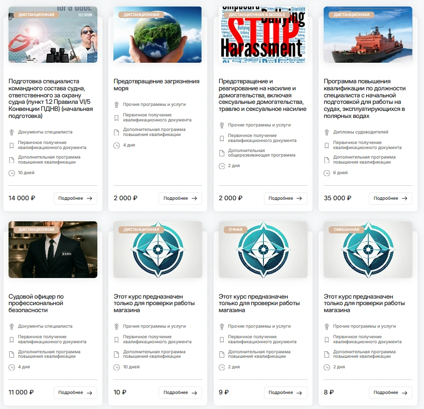
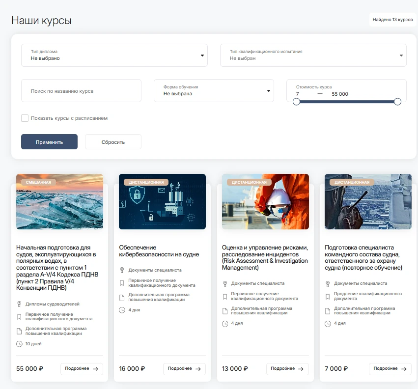
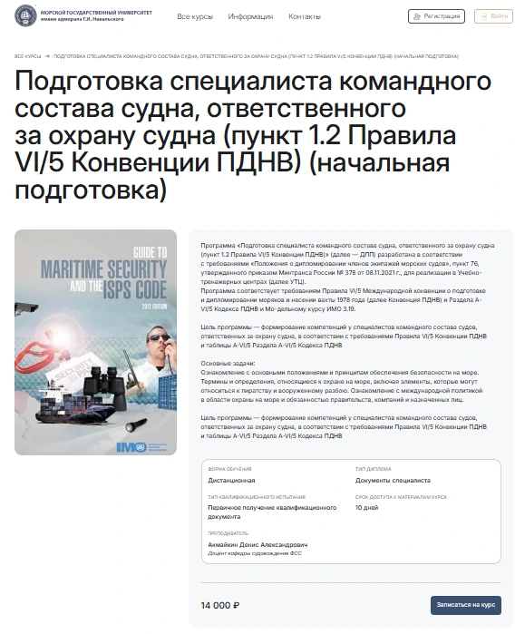
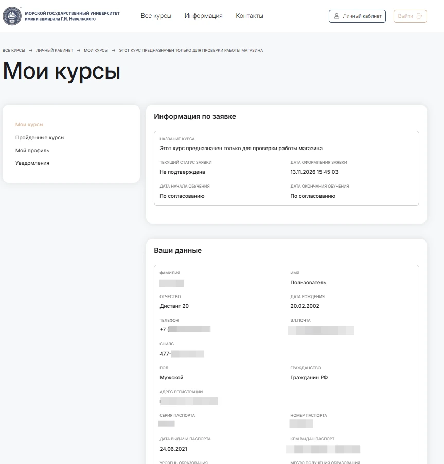
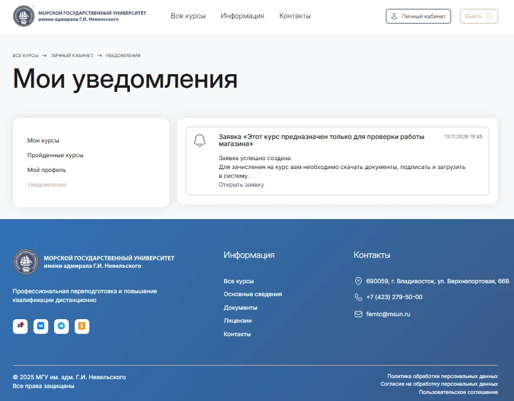
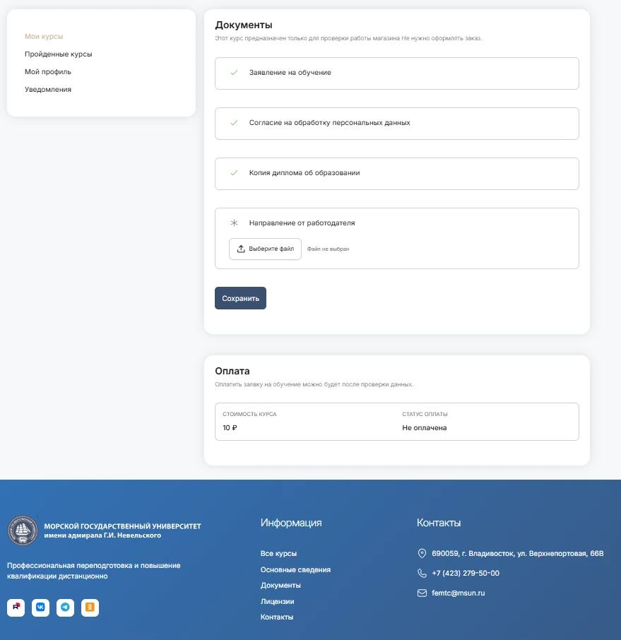

Клиент: Дальневосточный морской тренажерный центр
Проект: развитие интернет-магазина образовательных программ
Направления работы: проектирование пользовательских сценариев, веб-разработка, интеграция с 1С и iSpring Learn, автоматизация оформления и оплаты обучения
Работа проведена совместно с нашими партнёрами по 1С.
Client: Far Eastern Maritime Training Centre
Project: Development of an online store for training programmes
Scope of work: User journey design, web development, integration with 1C and iSpring Learn, automation of enrolment and payment
The project was delivered in collaboration with our 1C partners.
Цель проекта
Сделать процесс выбора курсов удобным для слушателей, а внутренние процессы автоматизированными и связанными с учебной площадкой и 1С: объединить выбор курса, оформление заявки, согласование документов, оплату и получение доступа к обучению в последовательный процесс.
Для слушателя — сделать понятными дальнейшие действия: какую программу выбрать, какие сведения предоставить, когда оплатить и где начать обучение.
Для учебного центра — связать сайт с внутренней системой учёта, чтобы данные о программах, слушателях, заявках и договорах использовались согласованно.
Project goal
Make it easier for learners to choose a course while automating the training centre’s internal processes and connecting them to its learning platform and 1C. The goal was to bring course selection, application, document approval, payment and access to learning together into one coherent process.
For learners, the aim was to make each next step clear: which programme to choose, what information to provide, when to pay and where to begin learning.
For the training centre, the goal was to connect the website to its internal management system so that information about programmes, learners, applications and contracts could be used consistently.
В чём сложность проекта?
Продажа образовательной программы отличается от обычной покупки товара. До начала обучения необходимо учесть квалификацию слушателя, собрать сведения для оформления, подготовить договор, согласовать заявку и определить условия доступа к курсу.
При этом разные программы требуют разных сценариев:
- Дистанционное обучение: доступ к материалам предоставляется после оплаты на установленный срок.
- Очное обучение: запись связана с расписанием и обработкой заявки специалистом центра.
- Смешанное обучение: доступ к дистанционной части должен учитывать даты очных занятий.
- Программы в Moodle: доступ выдаёт менеджер в рамках отдельного процесса.
- Обучение за счёт организации: договор и расчёты ведутся с компанией, а обучение проходит конкретный слушатель.
Дополнительная сложность — согласовать работу сайта, «1С: Управление учебным центром» и iSpring Learn. У каждой системы своя роль, но для пользователя переходы между ними должны оставаться понятными и «бесшовными».
What made the project challenging?
Selling a training programme differs from selling a physical product. Before training can begin, the centre needs to consider the learner’s qualifications, collect enrolment details, prepare a contract, review the application and determine the conditions for course access.
Different programmes also require different workflows:
- Online learning: access to materials is granted for a fixed period after payment.
- In-person training: enrolment depends on the schedule and review by a member of the centre’s team.
- Blended learning: access to the online component must take the dates of in-person sessions into account.
- Moodle programmes: access is granted by a manager through a separate process.
- Employer-funded training: the contract and payment are handled with the organisation, while an individual employee takes the course.
Another challenge was coordinating the website, the 1C training centre management system and iSpring Learn. Each system has its own role, but the transitions between them needed to feel clear and seamless to the user.
Наш подход
В основу работы мы положили путь слушателя и действия сотрудников центра на каждом его этапе.
Выбор программы → регистрация → заявка → согласование договора → оплата → доступ к обучению → завершение курса.
Для каждого этапа определили, какие данные нужны, где они хранятся, кто принимает решение и что пользователь видит в личном кабинете.
Автоматизировали повторяющиеся операции, сохранив участие менеджера там, где требуется проверка или согласование.
Our approach
We built the project around the learner’s journey and the actions required from the centre’s team at each stage:
Programme selection → registration → application → contract approval → payment → access to learning → course completion.
For every stage, we defined what information was needed, where it would be stored, who would make the decision and what the user would see in their account.
We automated repetitive tasks while retaining a manager’s involvement wherever review or approval was needed.

Что сделано.
What we did
1. Организовано управление каталогом из 1С
Сделали 1С основным источником информации об образовательных программах.
Названия, описания, стоимость, продолжительность, форма обучения и расписание передаются на сайт из учётной системы. Сотрудник центра определяет в карточке программы, должна ли она отображаться в магазине.
Заказчик управляет предложением в привычной рабочей системе. Повторно редактировать те же сведения на сайте не требуется.
Предусмотрели синхронизацию данных и ручное обновление, чтобы сотрудники могли контролировать публикацию изменений.
1. Enabled catalogue management through 1C
We made 1C the primary source of information about training programmes.
Programme names, descriptions, prices, durations, learning formats and schedules are transferred from the management system to the website. A member of the centre’s team can choose whether each programme appears in the online store directly from its record in 1C.
The client can manage its offering in the system its team already uses, without having to update the same information on the website.
We also provided data synchronisation and a manual refresh option, giving the team control over when changes are published.

2. Построен поиск вокруг задачи слушателя
В профессиональном образовании человек не всегда знает точное название необходимого курса. Часто он понимает свою задачу: получить квалификационный документ, повысить его уровень или продлить его действие.
Поэтому реализовали двухуровневую фильтрацию:
- сначала — по типу диплома или квалификационного документа;
- затем — по типу квалификационного испытания.
Дополнительно предусмотрели поиск курсов, фильтры по форме обучения, стоимости и наличию расписания.
Каталог помогает перейти от профессиональной задачи к подходящей программе.
В карточке курса собрали сведения, необходимые для принятия решения: описание, продолжительность, стоимость, формат и ближайшие даты обучения.
2. Built course discovery around the learner’s goal
In professional training, people do not always know the exact name of the course they need. They often know the goal instead: obtain a qualification, upgrade it or renew an existing credential.
We therefore implemented two levels of filtering:
- First, by diploma or professional credential.
- Then, by type of qualification assessment.
We also added course search and filters for learning format, price and schedule availability.
The catalogue helps learners move from a professional goal to a suitable programme.
Each course page brings together the information needed to make a decision: description, duration, price, format and upcoming training dates.


3. Связали регистрацию и заявки с учётной системой
При регистрации учётная запись на сайте связывается с карточкой слушателя в 1С. Предусмотрели проверку совпадений, чтобы повторное обращение человека не приводило к необоснованному созданию новых карточек.
Данные из профиля подставляются в форму заявки. После отправки информация передаётся в 1С, где сотрудник центра продолжает работу с обращением.
Процесс учитывает и нового клиента, и слушателя, который уже обращался в центр.
3. Connected registration and applications to 1C
When a learner registers, their website account is linked to their learner record in 1C. We added matching checks to prevent unnecessary duplicate records when someone returns to the centre.
Profile details are pre-filled in the application form. Once submitted, the information is sent to 1C, where a member of the centre’s team continues processing the application.
The process supports both new clients and learners who have previously used the centre’s services.
4. Сделали личный кабинет рабочим инструментом слушателя
В личном кабинете собрали:
- текущие заявки и их статусы;
- действующие и завершённые курсы;
- договоры для скачивания;
- загрузку подписанного договора;
- персональные данные;
- уведомления и переход к обучению.
Статусы показывают, на каком этапе находится заявка: обрабатывается, согласована, оплачена или завершена. Договор формируется в 1С и передаётся в личный кабинет.
Слушатель видит ход оформления и получает документы в одном месте.
4. Made the learner account a practical tool
The learner account brings together:
- Current applications and their statuses.
- Active and completed courses.
- Contracts available to download.
- Upload of the signed contract.
- Personal details.
- Notifications and links to learning materials.
Statuses show the progress of an application: being processed, approved, paid or completed. The contract is generated in 1C and delivered to the learner account.
Learners can follow their application and access their documents in one place.


5. Объединили оплату и предоставление доступа
Связали возможность оплаты со статусом заявки: кнопка появляется после необходимого согласования.
Для дистанционных программ в iSpring Learn после подтверждения оплаты автоматически предоставляется доступ к соответствующему курсу. В личном кабинете отображаются переход к материалам и срок обучения.
Для смешанных программ предоставление доступа связано с расписанием очной части. Для программ в Moodle сохранили предусмотренную заказчиком обработку через менеджера.
Также реализовали управление доступом при завершении обучения и отмене заявки, включая деактивацию или архивирование учётных записей по предусмотренным правилам.
Автоматизация охватывает весь срок обучения — от предоставления доступа до его завершения.
5. Connected payment with course access
We linked payment availability to the application status: the payment button appears once the required approvals are complete.
For online programmes delivered through iSpring Learn, access to the relevant course is granted automatically once payment is confirmed. The learner account displays a link to the materials and the access period.
For blended programmes, access is linked to the schedule of in-person sessions. For Moodle programmes, we retained the manager-led process specified by the client.
We also implemented access management for course completion and application cancellation, including account deactivation or archiving according to the defined rules.
The automation covers the full learning period, from granting access through to completion.

6. Учли корпоративных заказчиков
Разработали отдельный сценарий для слушателей, которых направляет организация.
Заявка связывается с компанией, договор оформляется на юридическое лицо, а расчёты ведутся по безналичной оплате. После поступления средств менеджер подтверждает оплату в 1С.
Слушатель видит, что обучение оплачивает организация. Требование оплатить курс самостоятельно ему не показывается.
Один магазин поддерживает продажи частным клиентам и работу с организациями с учётом различий в оформлении и расчётах.
6. Accounted for corporate clients
We developed a separate workflow for learners sponsored by an organisation.
The application is linked to the company, the contract is issued to the legal entity, and payment is made by bank transfer. Once the funds arrive, a manager confirms payment in 1C.
The learner can see that the organisation is paying for their training and is not asked to pay for the course themselves.
One online store supports both individual and corporate clients, taking their different enrolment and payment processes into account.
7. Предусмотрели сбои и повторные действия
В интеграционном проекте важно продумать ситуации, когда процесс прерывается.
Реализовали проверки данных, защиту от повторных заявок на тот же курс и регистрацию изменений статусов.
При временной недоступности 1С заявка сохраняется в очереди для последующей передачи. Для обмена с образовательной платформой предусмотрели обработку ошибок и повторные попытки.
Надёжность процесса стала частью разработки наряду с интерфейсом и функциональностью.
7. Planned for failures and retries
In an integration project, it is essential to consider what happens when a process is interrupted.
We implemented data validation, protection against duplicate applications for the same course, and logging of status changes.
If 1C is temporarily unavailable, an application is saved in a queue for later transfer. For communication with the learning platform, we added error handling and retry mechanisms.
Process reliability became part of the development alongside the interface and functionality.
Что получил заказчик
В рамках проекта реализован согласованный процесс продажи и оформления обучения:
- каталог управляется из 1С;
- заявки с сайта поступают в учётную систему;
- документы и статусы доступны слушателю в личном кабинете;
- оплата связана с дальнейшим предоставлением доступа;
- разные форматы обучения работают по своим правилам;
- предусмотрен отдельный порядок для корпоративных клиентов.
Работу завершили тестированием пользовательских сценариев и интеграций, подготовкой документации и обучением сотрудников.
Главный результат — сайт стал рабочим инструментом учебного центра, связанным с оформлением слушателей, оплатой и организацией доступа к обучению.
Если вашему бизнесу нужен сайт, связанный с CRM, 1С, оплатой или другими рабочими системами, — обсудим вашу задачу. Определим, какие действия стоит автоматизировать и как сделать процесс понятным для клиентов и команды.
What the client received
The project delivered a connected process for selling training programmes and enrolling learners:
- The catalogue is managed through 1C.
- Website applications are sent to the management system.
- Documents and statuses are available to learners in their accounts.
- Payment is connected to the subsequent granting of access.
- Different learning formats follow their own rules.
- Corporate clients have a dedicated process.
We completed the work by testing user journeys and integrations, preparing documentation and training the centre’s team.
The main result is a website that serves as a working tool for the training centre, connected to learner enrolment, payment and access to learning.
If your business needs a website connected to a CRM, 1C, payment services or other business systems, let’s discuss your goals. We’ll identify which steps are worth automating and how to make the process clear for both your clients and your team.